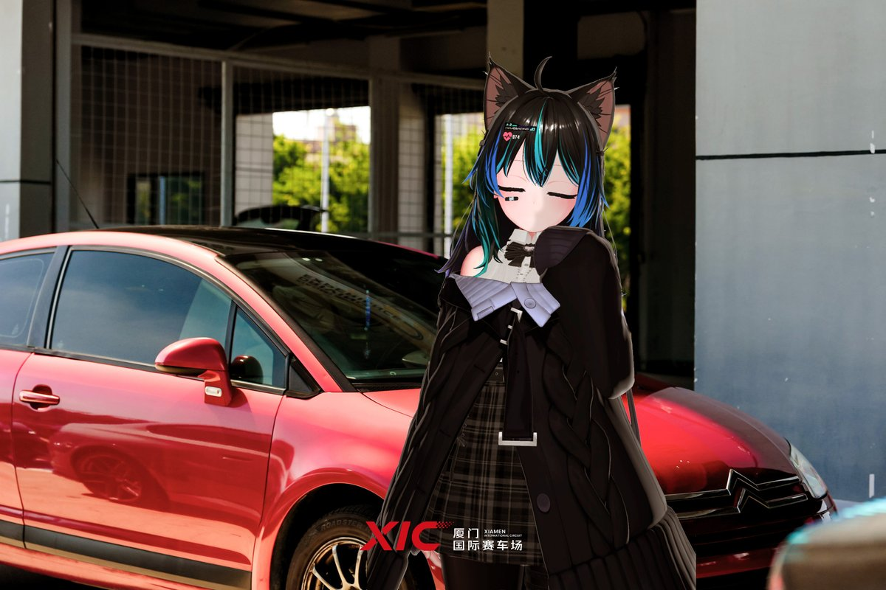

快过年了不要再讨论什么ECU一阶二阶绞牙避震宽体套件排气阀门轮毂ET值了你把那辆折腾了一年的车擦得锃亮塞满后备箱的千斤顶扭力扳手和备胎回到家并不能给你带来任何实质性作用朋友们兜里掏出一大把钱吃喝玩乐你默默蹲在车库里刷参数对着OBD看水温油温听着排气冷启动哐一下心里暗爽
亲戚朋友吃饭问你今年有什么收获你说我刷了ECU换了涡轮四轮定位做到赛道规格马力机实测提升了32匹亲戚们一脸懵你还在心里默默嘲笑他们笑他们不懂倾角不懂胎温曲线也笑他们开车只看油耗从来不知道什么叫指向性
你父母的同事都在说自己的子女一年的收获儿子买了个房女儿买了个车姑娘升职加薪了
你的父母默默无言说我的儿子把车拆了又装装了又拆底盘低到过减速带要斜着走晚上回家一拧钥匙像打雷油费比房租涨得还快
亲戚朋友吃饭问你今年有什么收获你说我刷了ECU换了涡轮四轮定位做到赛道规格马力机实测提升了32匹亲戚们一脸懵你还在心里默默嘲笑他们笑他们不懂倾角不懂胎温曲线也笑他们开车只看油耗从来不知道什么叫指向性
你父母的同事都在说自己的子女一年的收获儿子买了个房女儿买了个车姑娘升职加薪了
你的父母默默无言说我的儿子把车拆了又装装了又拆底盘低到过减速带要斜着走晚上回家一拧钥匙像打雷油费比房租涨得还快
